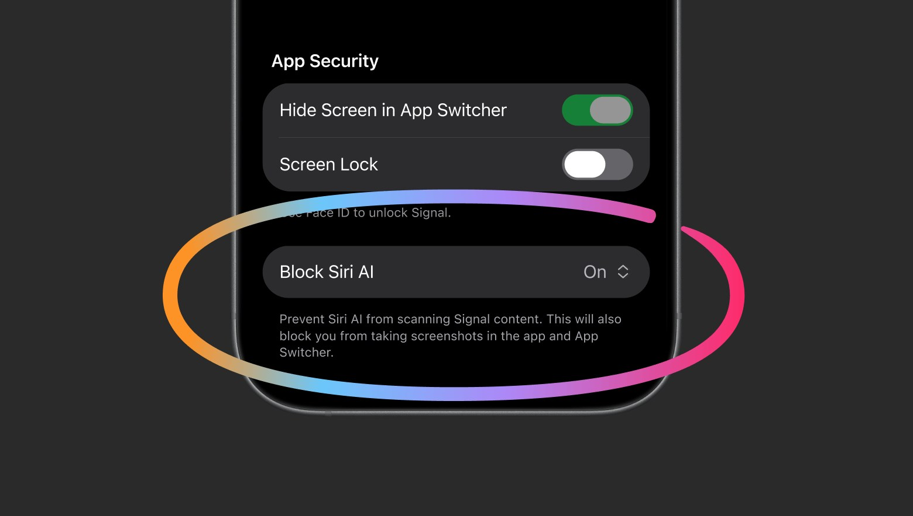

В официальном блоге Signal фонд Signal Technology Foundation опубликовал заявление главы организации Мередит Уиттакер: мессенджер ограничивает работу ИИ-агентов, встроенных в мобильные операционные системы. Суть защиты: в приложении на iOS 27 создаваемые скриншоты блокируются, а на Android Signal автоматически включает настройку «Screen security», когда система фиксирует попытку ИИ-ассистента считать содержимое экрана. На iOS появилась и явная опция «Block Siri AI».
Причина простая: Google внедряет агентные возможности Gemini (режим работы с экраном) в Android, Apple — Siri AI с функцией «Onscreen Awareness» в iOS. Такие агенты «сканируют» всё, что открыто на экране, чтобы отвечать на вопросы пользователя. В результате переписка в Signal — включая самоуничтожающиеся сообщения — попадает в локальные базы или на серверы операционной системы, где контроль над ней теряет уже сам Signal. Для мессенджера, чьё существование держится на формально верифицированном шифровании, это, по словам Уиттакер, «экзистенциальная угроза».
Опыт такого сопротивления у Signal уже был: в прошлом году мессенджер заблокировал скриншоты на Windows 11, чтобы система Microsoft Recall — она каждые несколько секунд снимает экран и распознаёт текст — не складывала переписку в поисковую базу. Теперь та же логика перенесена на смартфоны. При этом защита заведомо неполная: пользователь может отключить её в настройках (и тогда риск вернётся для обеих сторон разговора), а любые способы чтения данных мимо скриншотов — например, доступ к файлам на устройстве — блокировка не закрывает.
Главная претензия разработчиков — им просто не дают инструментов. Уиттакер пишет, что за месяцы форензических исследований на Android и iOS так и не появилась внятная документация о том, как именно ИИ-агенты получают доступ к данным приложений. Signal требует от создателей операционных систем двух вещей: документированного способа для приложения отказаться от ИИ-обработки своих данных (экран, файлы, уведомления — без поломки основных функций) и честных технических спецификаций по работе самих агентов. Отдельно признано, что «конфиденциальные вычисления» проблему не решают — они оставляют объём приватности на усмотрение самого вендора ОС.
Самое уязвимое признание: на macOS защита не работает. Надёжно блокировать скриншоты в macOS у Signal не получилось — существующие API экранных ограничений рассчитаны на стриминг и DRM-контент, а не на приложения. Пока владельцам Mac советуют вручную добавить Signal в раздел «Исключаемые приложения» для Siri в системных настройках. Уиттакер называет Signal «канарейкой в угольной шахте»: если не ответить сейчас, ИИ-агенты получат теневой доступ к данным любых приложений, и шифрование тут уже не спасёт.